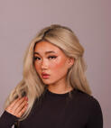

Rebecca Liu

Working at Reliu to manifest longevity research into how people live
About
Born in Pennsylvania, grew up in New Jersey. I've tinkered and built things in my free time ever since I can remember.
Trained in ballet starting at age 4.
Lifelong obsession with health; in middle school I woke up at 5 am to take cold showers and read nutrition research.
Competitive figure skater since age 8. Learned to love struggling.
Built an online slime business in middle school and a nail art studio in high school.
1 of 20 high school students selected for the Stanford Lifestyle Medicine Program in 2024 under Dr. Rachele Pojednic.
At 17 traveled to Haiti, the poorest country in the Western Hemisphere, and performed surgeries.
Led research with Stanford biology professor Amanda Wu on barriers to health behavior change.
I eat a fully plant-based diet and cut out added sugar when I was 13 for health.
At 19 dropped out of NYU to build Reliu.
Moved to San Francisco, currently living in the Mission Control hacker house.
Endeavors
- Solo-led a health initiative that convinced a third of local restaurants to change their menus: 250k+ impressions, 10k customers; saved 10M sq. ft. of land, 19k lbs of greenhouse gases, and 250k+ gallons of water. Earned a mayoral proclamation.
- Made a YouTube channel that amassed 2M+ impressions.
- At 15, won 2nd place in the Princeton AAASE competition for a project in AI news media research.
- Placed in the top 5% of Junior Breakthrough Challenge contestants.
- Figure skater on the NYU team that won 3rd at Collegiate Nationals 2026.
Thoughts and Beliefs
- Bridging the gap between existing nutrition research and what people are actually doing every day. I see more and more people motivated to change their behaviors but lacking direction and knowledge on what to do.
- The research is too scattered. The average American isn't going to go and do comprehensive research, so people turn to social media, where there is an overabundance of misinformation and gimmicky "solutions."
- Everyone is looking at preventative health wrong. They are reactive-preventative, looking at metrics first instead of the lifestyle behaviors that cause them.
- Art is a feeling that can be applied to the process of doing anything. There's an art to losing yourself to the pursuit of something great.
- "The deepest form of slavery is the hunger for being understood."